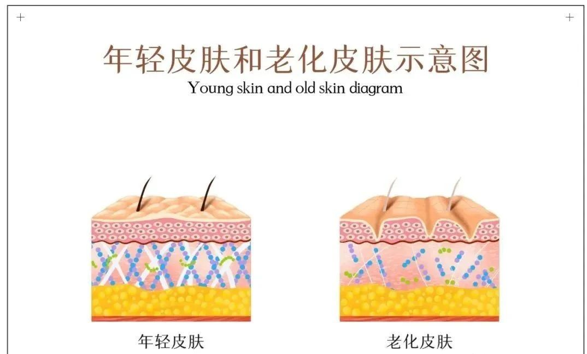
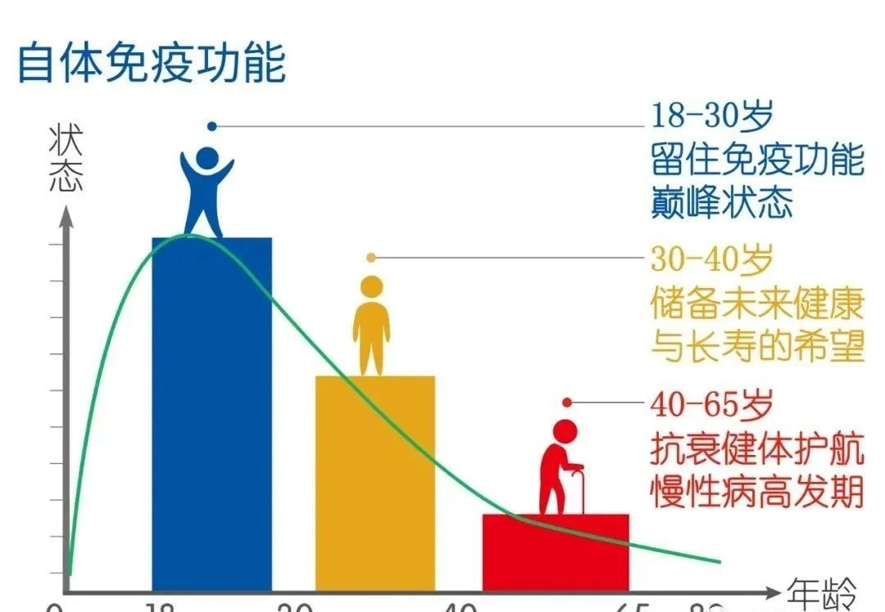
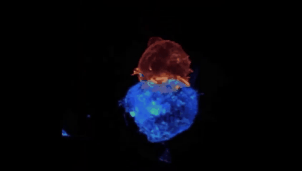
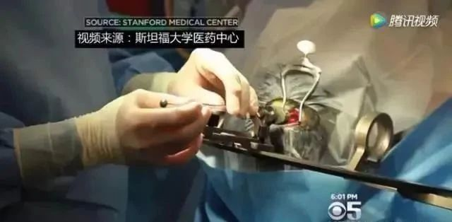
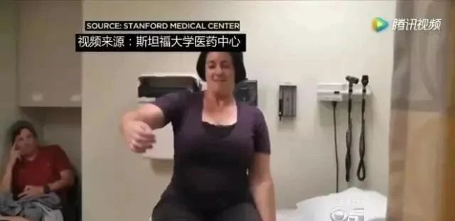

年后肝"负重"？百年春护肝美颜能量抗衰老针——给肝"松绑"，让脸发光！
2026-03-01

About Us
关于百年春
人从出生开始，就注定走向衰老。每个人的衰老不同，在岁月面前我们无能为力，却又心有不甘。
一般来说，人从30岁开始，平均每10年左右，我们就要跨过一道“坎儿”，能否过坎儿，能否健康？并非天定！
是腿脚灵活、目光炯炯、精神健旺？
还是疾病缠身、拄着拐杖、生活难自理？
人的一生要过30岁五个“坎儿”，看看你将要面对哪些风险！
30岁的肌肤坎儿
30岁时，我们的肌肤进入“中度衰老期”，脸上开始出现各种纹路，并失去青春的丰满；皮肤越来越薄、变得干燥、松弛；单单靠护肤品是不能解决的，体内环境的变化占主导地位。

干细胞美容抗衰技术。运用干细胞技术不仅能促进表皮细胞的增长，修复细胞损伤，使肌肤重新充满活力和弹力；还可以有效改善性功能、代谢等各项人体机能，从底层完成美容抗衰。
40岁的免疫坎儿
上有老人要赡养，下有儿女要供养，还背负着数额庞大的房贷或车贷，身心的疲惫让正值壮年时期的人们感觉自己已经老了。
在单位，也许你真的不重要！离开了你，太阳照样升起！但是在家里，你真的很重要，是家里的顶梁柱。

免疫细胞K.O未老先衰
免疫细胞是健康的守护者，不仅能发现并消灭外来入侵的病原微生物，还能识别和清除体内被感染、老化的细胞或发生癌变的细胞。但随着年龄的增长，免疫细胞同干细胞一样，也会逐渐退化骤减。
研究数据显示，衰老时体内免疫细胞的战斗力不足年轻时1/10，使得年长者容易受到细菌病毒感染以及癌症的威胁。

自体免疫细胞正在攻击肿瘤细胞
维持或重建适当的免疫力，可以预防老化及癌症的发生。
50岁的心脑血管儿
心脑血管疾病，是50岁以上群体的常见病，具有高患病率、高致残率和高死亡率的特点。过去我们通常对中风和其他脑损伤等神经退行性病变的认识是：这类脑损伤是永久不可复原的，但事实并非如此 。
干细胞帮助中风患者重新站立
2016年，美国《中风》杂志曾报道了一项关于干细胞治疗中风患者的临床研究，该项研究共对18名中风患者进行了治疗，这些患者的平均年龄为61岁。
研究人员向这些受试患者的大脑中注射间充质干细胞后，他们的病情全部发生了明显的改善，其中有7名患者的改善效果显著。


60岁的血糖坎
在我国，糖尿病患者人数逐年增多，已经排名世界第一，在我们身边，平均每10个人当中就有一个糖尿病患者。失明、截肢等糖尿病并发症更是让患者苦不堪言，严重影响生活质量。
越来越多的干细胞临床结果证实，干细胞技术已成为治疗糖尿病的有效手段。
可以有效降低血糖，改善患者胰岛功能，降低糖尿病并发症的发生风险；同时，均具有改善糖尿病并发症的作用，如糖尿病肾病、糖尿病足、糖尿病视网膜病变等。
有案例表明：糖尿病足患者通过局部注射干细胞后，一个月后部溃疡愈合基本愈合，疼痛麻木感消退。
70岁的神经坎
年过古稀，也就是70岁，基本已经看遍人间世事，参透人生道理，但是忽然有一天你开始失去所拥有的一切……
70岁高发阿尔茨海默病，也就是我们常说的老年痴呆，患者记忆严重衰退、行动力慢慢为零，最终变得全面性痴呆。
干细胞帮阿尔茨海默病老人“取出”脑海中的橡皮擦！
一款用于治疗阿尔兹海默症的干细胞药物AstroStem获批在日本福冈三一诊所（TrinityClinic Fukuoka）商业化使用。AstroStem属于静脉注射间充质干细胞，是治疗阿尔兹海默症的新方法，该疗法在美国开展的I期和II期研究已于2016年11月获得FDA审批准入，在clinicaltrials.gov上的登记编号为NCT03117738。
自2008年以来，该研究团队一直在评估静脉注射的安全性，并且静脉注射的安全性已经美国的临床试验中得到了证实。
与现有的阿尔兹海默症治疗方法不同，干细胞疗法有望成为一种根本性疗法。研究发现，该疗法具有多种功能，包括抗炎、脑血管再生以及脑细胞的保护和再生。